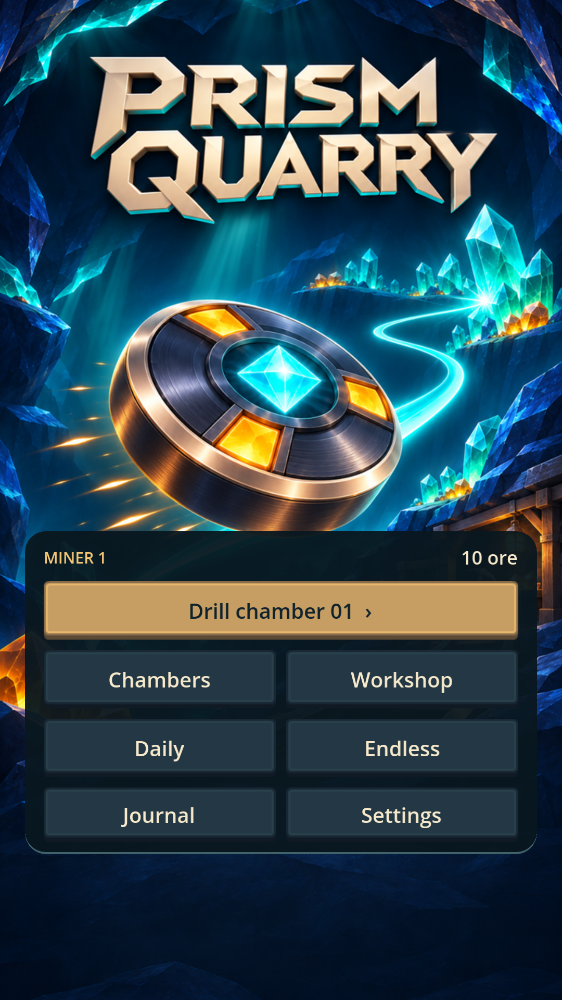
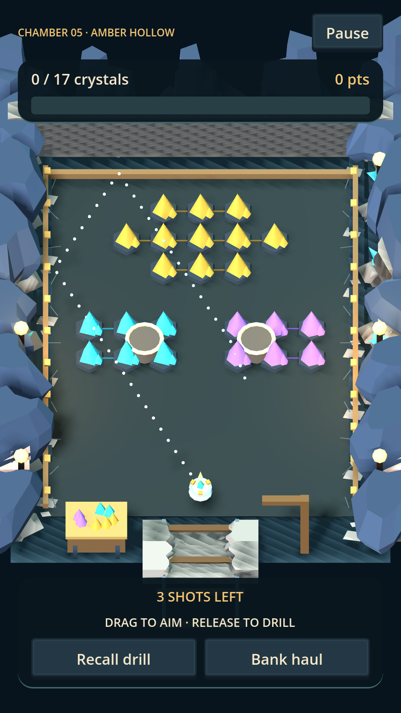
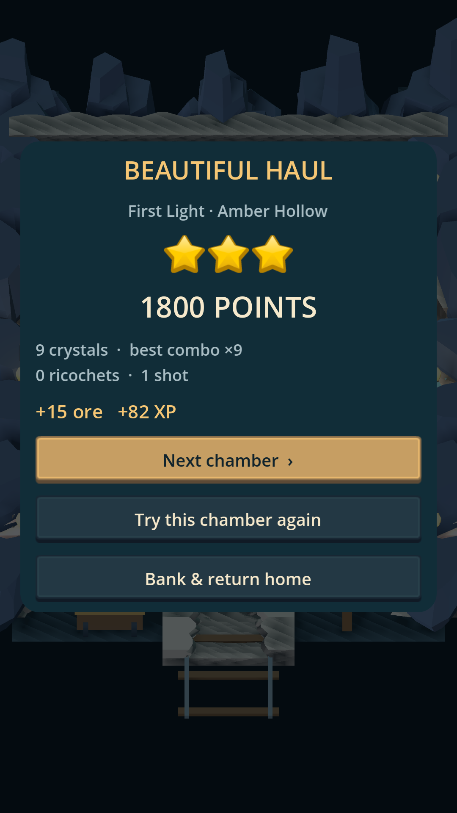
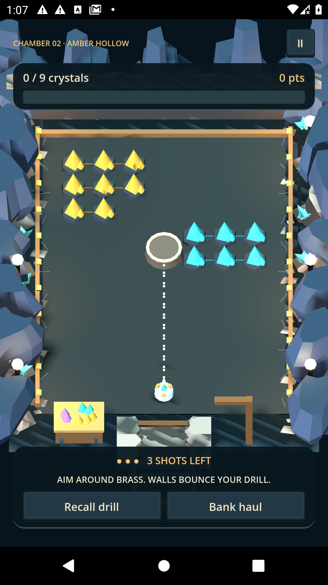
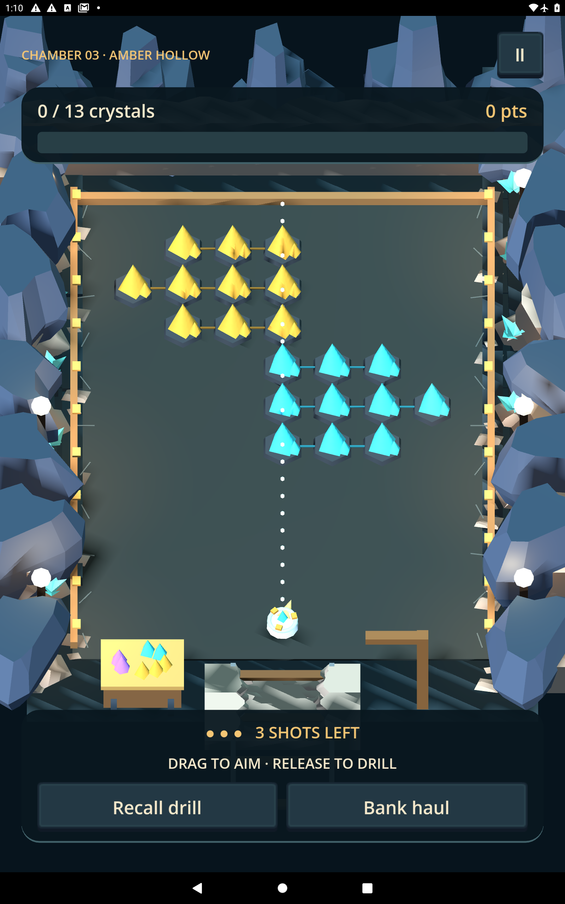
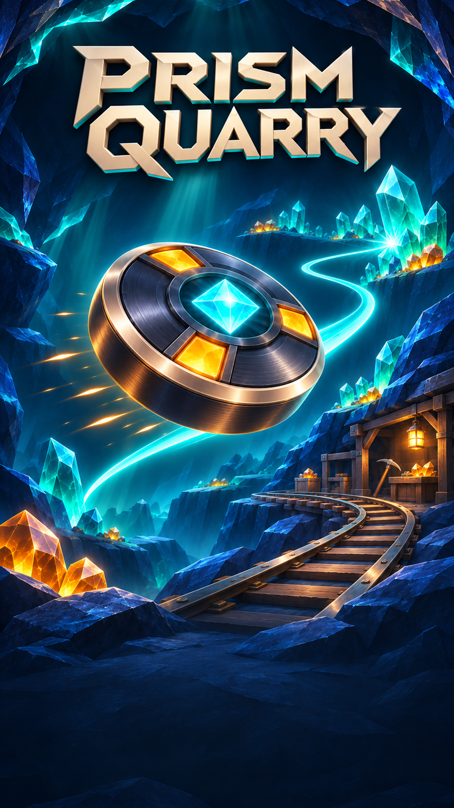

Find the perfect angle
Drag the puck to aim. Read the predicted path and use the chamber walls to reach seams that a straight shot would miss.
A little quarry. A brilliant chain reaction.
Pull back, line up your glowing drill puck, and let one satisfying ricochet turn a quiet cavern into a cascade of colour.
Expansion development review · Godot 4.5.1 · Portrait Android + Web preview

Small input. Big payoff.
A readable trajectory, clear objectives and forgiving opening chambers put the fun in the shot. Build a route through the ore, then watch your plan unfold.
Drag the puck to aim. Read the predicted path and use the chamber walls to reach seams that a straight shot would miss.
Bounce between clusters, break a seam and collect the fragments. Short rounds make another attempt feel close at hand.
Bring the haul home. Improve your drill and rig, grow your miner level, and choose the look of your next expedition.
A reason to come back
Two hundred campaign chambers introduce new arrangements and objectives across ten biomes. Endless Quarry offers another haul; a seeded daily chamber gives each day a shared starting point.
Smaller ore payouts give each workshop purchase more weight across the longer campaign. Miner XP, daily goals, a seven-day login cycle and cosmetic choices add reasons to return. Local achievements and records track your progress.
These descriptions cover the expanded development edition. Exact test results and remaining checks belong in the dated acceptance record.
Choose what improves next
Every choice has twelve ranks and a distinct effect. The campaign is designed for base equipment; upgrades give your earned ore a purpose.
Keep the drill in flight longer before it returns.
Link matching crystals across wider gaps.
Recover more ore per crystal; later ranks improve the haul’s payout rate.
Give the drill a wider crystal contact margin.
Extend the reach of white-prism fractures.
Earn more points from each crystal in a cascade.
Fresh renders from the expanded quarry
These 42 genuine desktop renders show home, map, all ten biomes, workshop and results at three portrait sizes. Direct chamber selection is a capture fixture, not manual play of the campaign. Each image retains its provenance; viewport size is not proof of physical-device testing.



These genuine expansion fallback images also work when opened from disk. HTTP enables profile controls; provenance identifies each capture and source.
Read capture provenanceOn Android · actual emulator runtime
Unmodified emulator framebuffers from the Nov13 test APKs, before the later Pause/shot-label correction. These 11 historical images are distinct from the desktop fixture gallery and do not show the campaign expansion. Google test-ad frames are kept in their own QA section.


Retained Nov13 APK evidence predates the ASCII Pause/numeric-shot label correction. Native flow acceptance and exact APK identities are recorded separately in the acceptance report.
These frames document SDK testing. They are not store gameplay screenshots and do not establish production-service acceptance.
Read native capture provenance · Read exact acceptance scope
A coherent little world
Warm workshop details, luminous seams and deep cave colours tie the app icon, feature image and portrait splash together.

Play at your pace
The Android integration reserves banner space on home and results. Interstitials are scheduled at every third completed round's natural result/next boundary. An optional rewarded continuation can be earned once after failure.
Core chamber success is designed to be possible without an ad or an upgrade. Web does not simulate an earned reward. Pause, sound and feedback controls keep short sessions manageable.
Service setup is still a release task.
Test ads and disabled production Play Games mappings belong to the development package. Production IDs, consent review, signing, live service checks and Google Play publication remain owner work. No store release or Console import is claimed here.
Reviewable, downloadable, traceable
Store drafts, catalog data and import materials are source assets. Static validation does not mean Google Play has accepted or published them.
Flooded chambers. Refraction through moving water. A new way to read a ricochet. A future expansion concept only, with no announced price or release date.